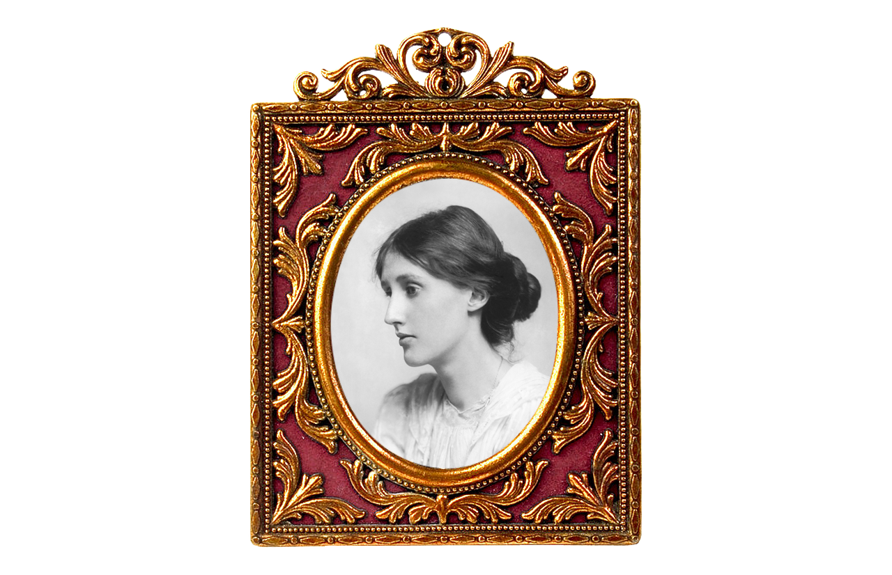

버지니아 빅토리아는 후기 빅토리아 시대 영국 학자 가문에서 태어났다. 학자 가문에서 아들들은 정식 교육을 받았으나 딸인 버지니아 울프는 다른 오빠와 달리 집안 내에서 가정교육만을 받았다. 그녀는 여자라는 이유로 학교를 다니지 못하였으나 집안 교육과 지식을 독학하여 쌓았고 이는 이후 지적활동의 기반이 되었다. 또한 버지니아 울프는 의붓오빠에게 성폭행을 겪고 이로 인해 신경쇠약과 정신질환을 갖게 되고 이는 평생동안 그녀를 괴롭히게 된다.


이러한 어려움에도 구하고 뛰어난 지식과 지성을 보인 버지니아는 '블룸즈버리그룹'이라는 지식인 모임에 들어가고 저작활동을 통해 뛰어난 작품들을 세상에 선보이게 된다. 정식으로 교육을 받은 남성 지식인들 사이에서도 그녀는 뒤지지 않는 지식인이었다. 그녀는 그곳에서 정치 경제와 더불어 여성의 성적 욕구라든지 당시에선 금기시되던 주제를 다루고 시대를 앞서가는 모습을 보였다. 그녀는 끊임없이 글을 썼고 소설뿐만 아니라 33살 이후로는 꾸준히 일기를 썼다. 그녀는 글을 꾸준히 쓰고 연습하고 많은 훌륭한 서평, 에세이, 소설들을 써내게 된다.

케임브리지 대학 뉴넘 칼리지에서의 강연을 토대로 한 에세이 <자기만의 방>은 큰 반향을 불러일으키며 훗날 페미니즘의 교과서로 추앙된다. 당시 페미니즘이란 단어도 존재하지 않던 시기에 버지니아 울프는 여성의 권리를 일깨우며 여성의 독립성을 주장했다. 남성중심적이고 가부장적이던 사회에서 태어난 그녀는 그 곳 안에서 문제를 깨닫고 그 문제를 꼬집는 글을 써냈다. 버지니아 울프는 20세기 대표적 모더니스트로서 문학적으로 뛰어난 작가일 뿐만 아니라 기존의 남성중심 질서에 문제를 제시하는 혁신가이기도 했다.